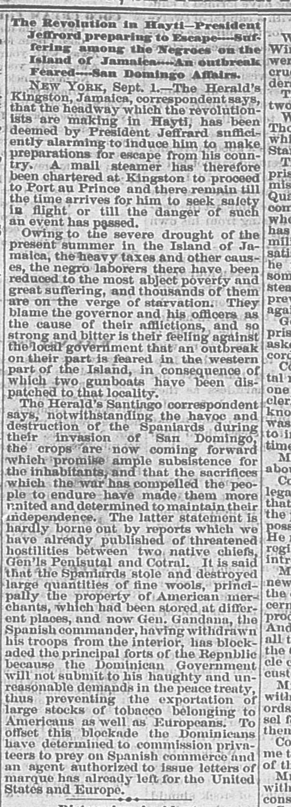
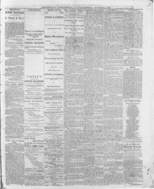

Tho Herald's Santiago correspondent says, notwithstanding the havoc and destruction of the Spaniards during their invasion of San DomingoEl corresponsal del Herald en Santiago dice que, a pesar del estrago y la destrucción de los españoles durante su invasión de Santo Domingo
The Wheeling Daily Intelligencer. Wheeling, W. Va., September 2, 1865. Page 3. Published by Campbell & M'Dermot. A daily newspaper, 1865–1903.The Wheeling Daily Intelligencer. Wheeling, W. Va., 2 de septiembre de 1865. Página 3. Publicado por Campbell & M'Dermot. Periódico diario, 1865–1903. View the originalVer el original


See the full pageVer la página completaThe newspaper reported that two gunboats were dispatched to the western part of the island due to fears of an outbreak, while crops were coming forward to provide subsistence and unite the people in maintaining their independence, despite reported hostilities between native chiefs Generals Peuisutai and Cotral. It also noted that Spanish commander Gen. Gandana blockaded the principal forts because the Dominican government refused his peace treaty demands, preventing the exportation of American and European goods, prompting Dominicans to commission privateers and send an agent to issue letters of marque to the United States and Europe.El diario consignó que se despacharon dos cañoneros hacia el occidente de la isla ante el recelo de un estallido armado, al tiempo que las cosechas prosperaban para sustentar a la población y cohesionarla en la defensa de su independencia, no obstante los informes de rivalidad entre caudillos locales como los generales Pimentel y Cabral. Apuntó también que el jefe español general Gándara bloqueó las principales fortalezas marítimas debido a que el gobierno dominicano rehusó sus condiciones de paz, frenando la salida de efectos estadounidenses y europeos e induciendo a los dominicanos a armar buques corsarios y enviar un emisario a otorgar patentes de corso en los Estados Unidos y Europa.
FULL TEXT:TEXTO COMPLETO:
The Wheeling Daily Intelligencer September 2, 18652 de septiembre de 1865
The Revolution in Hayti—President Jeffrard preparing to Escape—Suffering among the Negroes on the Island of Jamaica—An outbreak Feared—San Domingo Affairs.La Revolución en Haití—El presidente Jeffrard se prepara para escapar—Sufrimiento entre los negros de la isla de Jamaica—Se teme un estallido—Asuntos de Santo Domingo.
NEW YORK, Sept. 1.—The Herald's Kingston, Jamaica, correspondent says, that the headway which the revolutionists are making in Hayti, has been deemed by President Jeffrard sufficiently alarming to induce him to make preparations for escape from his country. A mail steamer has therefore been chartered at Kingston to proceed to Port au Prince and there remain till the time arrives for him to seek safety in flight or till the danger of such an event has passed.NUEVA YORK, 1 de septiembre.—El corresponsal del Herald en Kingston, Jamaica, dice que el avance que los revolucionarios están haciendo en Haití ha sido considerado por el presidente Jeffrard suficientemente alarmante para inducirlo a hacer preparativos para escapar de su país. En consecuencia, se ha fletado un vapor correo en Kingston para que se dirija a Puerto Príncipe y permanezca allí hasta que llegue el momento en que deba buscar seguridad en la fuga o hasta que haya pasado el peligro de tal acontecimiento.
Owing to the severe drought of the present summer in the Island of Jamaica, the heavy taxes and other causes, the negro laborers there have been reduced to the most abject poverty and great suffering, and thousands of them are on the verge of starvation. They blame the governor and his officers as the cause of their afflictions, and so strong and bitter is their feeling against the local government that an outbreak on their part is feared in the western part of the Island, in consequence of which two gunboats have been dispatched to that locality.Debido a la severa sequía del presente verano en la isla de Jamaica, los elevados impuestos y otras causas, los trabajadores negros de allí han quedado reducidos a la más abyecta pobreza y a un gran sufrimiento, y miles de ellos están al borde de la inanición. Culpan al gobernador y a sus funcionarios de ser la causa de sus aflicciones, y es tan fuerte y amargo su sentimiento contra el gobierno local que se teme un estallido por su parte en la parte occidental de la isla, a consecuencia de lo cual se han despachado dos cañoneras a esa localidad.
The Herald's Santiago correspondent says, notwithstanding the havoc and destruction of the Spaniards during their invasion of San Domingo, the crops are now coming forward which promise ample subsistence for the inhabitants, and that the sacrifices which the war has compelled the people to endure have made them more united and determined to maintain their independence. The latter statement is hardly borne out by reports which we have already published of threatened hostilities between two native chiefs, Gen'ls Penisutal and Cotral. It is said that the Spaniards stole and destroyed large quantities of fine wools, principally the property of American merchants, which had been stored at different places, and now Gen. Gandana, the Spanish commander, having withdrawn his troops from the interior, has blockaded the principal forts of the Republic because the Dominican Government will not submit to his haughty and unreasonable demands in the peace treaty, thus preventing the exportation of large stocks of tobacco belonging to Americans as well as Europeans. To offset this blockade the Dominicans have determined to commission privateers to prey on Spanish commerce and an agent authorized to issue letters of marque has already left for the United States and Europe.El corresponsal del Herald en Santiago dice que, no obstante los estragos y la destrucción de los españoles durante su invasión de Santo Domingo, ahora avanzan las cosechas que prometen abundante subsistencia para los habitantes, y que los sacrificios que la guerra ha obligado al pueblo a soportar lo han hecho más unido y más resuelto a mantener su independencia. Esta última afirmación apenas se ve respaldada por los informes que ya hemos publicado acerca de hostilidades amenazantes entre dos jefes nativos, los generales Penisutal y Cotral. Se dice que los españoles robaron y destruyeron grandes cantidades de lanas finas, principalmente propiedad de comerciantes estadounidenses, que habían sido almacenadas en diferentes lugares, y ahora el general Gandana, el comandante español, habiendo retirado sus tropas del interior, ha bloqueado las principales fortalezas de la República porque el Gobierno dominicano no se someterá a sus altivas e irrazonables exigencias en el tratado de paz, impidiendo así la exportación de grandes existencias de tabaco pertenecientes tanto a estadounidenses como a europeos. Para contrarrestar este bloqueo, los dominicanos han decidido comisionar corsarios para que apresen el comercio español, y ya ha partido hacia los Estados Unidos y Europa un agente autorizado para expedir patentes de corso.